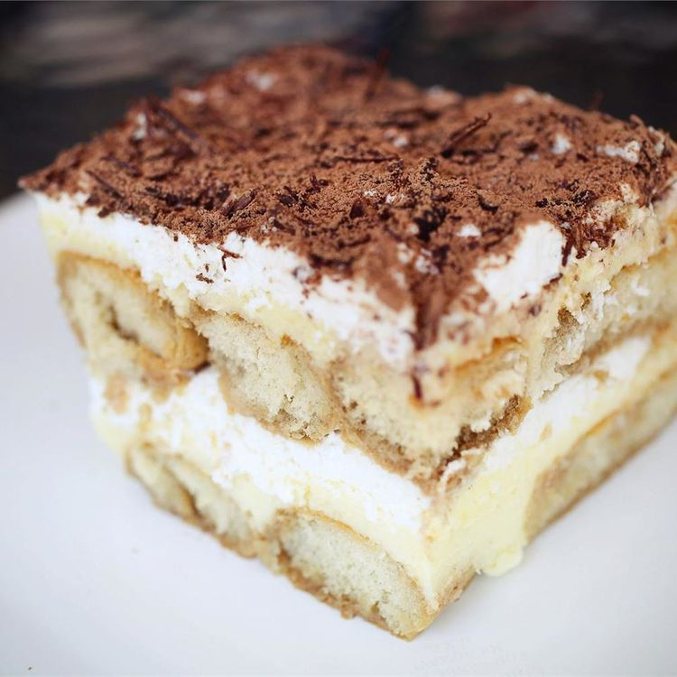

Ready to make the best tiramisu of your life? You'll find the full recipe below, but here's what you can expect when you make this classic tiramisu recipe:
STEP 1:
Whisk egg yolks and sugar together in a medium saucepan until well blended.
STEP 2:
Whisk in milk and cook over medium heat, stirring constantly, until mixture comes to a boil.
STEP 3:
Boil gently for 1 minute, then remove from the heat and allow to cool slightly.
STEP 4:
Cover tightly and chill in the refrigerator for 1 hour.
STEP 5:
Beat cream and vanilla in a medium bowl with an electric mixer until stiff peaks form.
STEP 6:
Remove egg yolk mixture from the refrigerator; add mascarpone cheese and whisk until smooth.
STEP 7:
Combine coffee and rum in a small bowl. Split ladyfingers in half lengthwise and drizzle with
the coffee mixture. Arrange 1/2 of the soaked ladyfingers in the bottom of a 7x11-inch dish.
Remove from the oven and let stand for 10 minutes before cutting and serving.
STEP 8:
Spread 1/2 of the mascarpone mixture over the ladyfingers, then spread 1/2 of the whipped cream over top. Repeat layers once more.
STEP 9:
Sprinkle cocoa powder over top.
STEP 10:
Cover and refrigerate until set, 4 to 6 hours.
STEP 11:
ENJOY!
Torna alla hompage